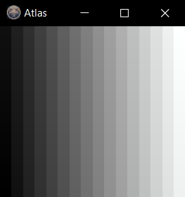

Atlas
Introduction
This document describes the syntax and semantics of the Atlas programming language.
Atlas is a real-time visualization language focusing on ease of GPU utilization. The paradigm used by
Atlas is a stack of tensors. This offers advantages relating to memory management, making
copying, slicing, reversing, and transposing all constant time operations. The workhorse of Atlas is
the c(compute) statements, which allow the definition of arbitrary GLSL functions, multiple return values,
and parameters of different sizes. Compute statements always compute on the accelerator, and
consequently should be restricted to large tensors.
Audience
In order for Atlas to be useful to you, you will need to know GLSL well. There are many tutorials available online, and some examples in this document. Atlas is ideal for testing out new GPU algorithms quickly. This is its main use case.
Basic Concepts
Atlas code is stack-oriented and uses a simple command-oriented syntax. Comments start with //
and extend to the end of the line. Whitespace and indentation are primarily for readability and do not
affect the program’s semantics. All commands are terminated with semicolons (;).
Labels are declared with l and quotes such as l'aLabel'. The core point of this
language is to make it easier to program the GPU. Most commands consume their arguments; for example
the sequence 1;if'go'; would push a 1 onto the stack, and then immediately consume it as a
truth value and branch to the label 'go'.
Atlas runs natively on Windows 10 and 11, and also on the web using emscripten. Porting to Linux is unlikely without third party help, but shouldn't be too hard in principle.
Program Model
The program model used by Atlas is a loop. At the end of the program running, the tensor on top of the stack is used as the RGB 3-channel display tensor, filling the window with that tensor, and then the program restarts from the beginning. The examples and documentation below will make this clearer.
Invocation
Atlas takes one parameter as an argument: the file to be run. If not given a filename, Atlas will run "main.atl" if present, or print a brief usage message if not. To invoke through a browser copy Atlas.html, Atlas.js, Atlas.wasm and Atlas.data to a served directory. A file named filelist.txt must also be present in the directory, which is a list of files to preload onto the filesystem. The list will include a main.atl and any supporting files. See the docs directory for a concrete example.
Data Types
All data in Atlas is floating point. This means that linear indexing only works out to about 16 million (24 bits), and the effective maximum dimension size (but not total size) of a tensor is 16 million. The total number of elements may not exceed 2^32 (4 gigaelements) or adressing will fail. All other types of data (e.g. strings) are converted into a tensor of floating point values.
- Number: Integers and floats, scalars are tensors too (e.g.,
42,3.14). - String: Text codepoints in single quotes (e.g.,
'Hello'). - Image: Bitmaps may be loaded with the
load'image.bmp'command. - Tensor: A multi-dimensional array used for advanced data manipulation (e.g.
[[1 2] [3 4]]or[1.0 2.0]or just0.0).
Tensors
Tensors are central to Atlas, as they are the only data structure built into the language. A tensor is a generalized multi-dimensional array. For example, a vector is a 1D tensor, a matrix is a 2D tensor, and dimensions up to 4 are also supported.
Variables
Variables are set with a set command like set'varName' 2 with varName a valid GLSL
identifier. Variables set this way will be available as uniforms in shaders, as well as through
get'varName' commands.
Control Structures
Atlas uses labels and if statements for control flow. These two structures alone are sufficient
to reconstruct the rest. For example 1;if'label'; does an unconditional branch to l'label'
located elsewhere in the code.
Functions
Functions are just labels in Atlas followed by a return command. For example, to add the top two elements on the stack:
l'add'; // Add the top two tensors element-wise
+;
return;
and then later in the code this function is called by name with just add.
Looping
Atlas programs are run in a loop, once per each frame of animation. Consequently, your program
should be designed to pass through rather than block. To quit the program, you can manually call
quit. At the end of each loop, a 4 channel rank 3 tensor must be on top of the stack, this
is used as the image to display.
Demos
A set of more full fledged demos can be seen in the distributed main.atl here.
Fibonacci Sequence
0;1; // Push the first two elements of the sequence.
l'fib';1;dup;1;dup;+; // Duplicate the top two elements and then add them.
0;dup;21;-;if'fib'; // Loop back to l'fib' if the top of the stack isn't 21.
print;quit; // Show the results.Tensor 8
Shape:
Strides:
21.00
Tensor 7
Shape:
Strides:
13.00
Tensor 6
Shape:
Strides:
8.00
Tensor 5
Shape:
Strides:
5.00
Tensor 4
Shape:
Strides:
3.00
Tensor 3
Shape:
Strides:
2.00
Tensor 2
Shape:
Strides:
1.00
Tensor 1
Shape:
Strides:
1.00
Tensor 0
Shape:
Strides:
0.00Simple Gradient
size;if'skip'; // Skip if we've already created the gradient.
6;[16 16 3];c''''ret[0]=i / 767.0\' 0 1 0; // The linear index goes to 16*16*3 - 1 = 767.0.
l'skip';
additive
This command makes it so that subsequent c compute commands are done in additive mode. Additive mode means that if two triangle coincide, they both draw, and add together the results.
+ / - / * / / / ^
These arithmetic commands take two arguments and do one of add, subtract, multiply, divide or exponentiate them, respectively. The argument on the top of the stack is the subtractend, denominator, or exponent, while the tensor below is the minuend, numerator, or base. These operations are done on the CPU and therefore should only be done on small tensors. Large tensor computation should be done with the c (compute) command. For example:
[1 2 3];[0.5 4 0.1];*;print;quit;Tensor 0
Shape: 3
Strides: 1
+----------------+
| 0.50 8.00 0.30 |
+----------------+c (compute)
c (compute) The c command is the core compute operation in Atlas. It lets you execute custom GLSL code on the GPU to produce an output tensor (or texture) from one or more input tensors. In short, everything else in Atlas is built around making it easier to perform GPU computations using this command. Syntaxc'vertexShaderFuncs'optionalVertexShader'glslFuncs'glslExpression' argCount retCount channelsQuoted String Parameters
After the c command, there are several quoted strings that contain your shader code and declarations: vertexShaderFuncs: A string for declaring functions or variables used in the vertex shader. (For example, you can use this to declare output variables that the fragment shader will later read.) optionalVertexShader: An optional string that contains the actual vertex shader code. If omitted, a default vertex shader is used. glslFuncs: A string where you can declare additional GLSL functions, constants, or helper code. Note: Semicolons are not allowed in any of these shader strings. Instead, terminate each statement with a backslash (\). glslExpression: This string contains the main shader code (similar to a fragment shader). Here you must assign values to the output array elements (ret[0] to ret[retCount - 1]). These assignments determine the output tensors. Within the shader code (especially in glslExpression), you have access to the following indices: i: A linear (integer) index. t: An ivec4 representing the multidimensional tensor index. ifloat and tf: Floating-point versions of i and t.Numeric Parameters
Following the quoted strings, you supply three numeric parameters: argCount: A number between 0 and 4 that tells Atlas how many input tensors (from the stack) to provide to the shader. These tensors are available as functions named a, b, c, and d. Each such function accepts an ivec4 index and returns the corresponding tensor element. retCount: The number of output values your shader produces. Your glslExpression must assign a value to each of ret[0] through ret[retCount - 1]. channels: This parameter determines the output mode: Tensor Mode (channels = 0): The shader produces one or more tensors as output. Texture Mode (channels = 4): A 4-channel texture is created instead of a tensor. In texture mode, the texture can only be used by subsequent c commands through specialized texture sampling functions (af, bf, cf, and df) that take vec2 UV coordinates. (Also note that operations which modify tensor shape—like reverse or transpose—won’t work on textures.) The type of the returned data will automatically be set to float, vec2, vec3, or vec4 depending on whether you use 1, 2, 3, or 4 channels.Important Notes
Statement Termination: In all shader code strings (i.e., glslFuncs and glslExpression), you cannot use semicolons (;). Instead, end each statement with a backslash (\). Input Tensor Access: When you specify an argCount greater than zero, each of the top input tensors is made available inside your shader as a function (a, b, c, or d). These functions take an ivec4 argument (the index within the tensor) and return the corresponding value. Operation Modes: Tensor mode (when channels is 0) is the standard mode where the shader outputs a tensor. Texture mode (when channels is 4) creates a 4-channel texture with some limitations regarding how it can be used later in your program.Example
The following Atlas snippet uses two input tensors to compute element‐wise minimum and maximum values. The shader compares the corresponding elements from the two input tensors and writes the minimum to one output tensor and the maximum to another:
[[1 2][3 4]];[[2 1][5 3]]; // Push two tensors onto the stack.
6;[2 2]; // Push the output shape (vertex count is 6 for two triangles).
c'''' // Call compute with empty vertexShaderFuncs, optionalVertexShader, and glslFuncs.
ret[0] = a(t) < b(t) ? a(t) : b(t)\ // For each element: output the minimum into ret[0].
ret[1] = a(t) < b(t) ? b(t) : a(t)\ // And output the maximum into ret[1].
' 2 2 0; // Numeric arguments: argCount = 2, retCount = 2, channels = 0 (tensor mode).
print;quit;
This will print:
Tensor 1
Shape: 2 2
Strides: 2 1
+---------------+
| +-----------+ |
| | 1.00 1.00 | |
| +-----------+ |
| +-----------+ |
| | 3.00 3.00 | |
| +-----------+ |
+---------------+
Tensor 0
Shape: 2 2
Strides: 2 1
+---------------+
| +-----------+ |
| | 2.00 2.00 | |
| +-----------+ |
| +-----------+ |
| | 5.00 4.00 | |
| +-----------+ |
+---------------+
cat (concatenate)
Given a stack of t1, t2, and axis (a scalar), the command concatenates t2 onto t1 along axis axis. For example:
[[0 1][2 3]];[[4 5][6 7]];0;cat;
[[0 1][2 3]];[[4 5][6 7]];1;cat;
print;quit;Tensor 1
Shape: 2 4
Strides: 4 1
+-------------------------+
| +---------------------+ |
| | 0.00 1.00 4.00 5.00 | |
| +---------------------+ |
| +---------------------+ |
| | 2.00 3.00 6.00 7.00 | |
| +---------------------+ |
+-------------------------+
Tensor 0
Shape: 4 2
Strides: 2 1
+---------------+
| +-----------+ |
| | 0.00 1.00 | |
| +-----------+ |
| +-----------+ |
| | 2.00 3.00 | |
| +-----------+ |
| +-----------+ |
| | 4.00 5.00 | |
| +-----------+ |
| +-----------+ |
| | 6.00 7.00 | |
| +-----------+ |
+---------------+depth
This command toggles depth testing (32-bit).
dup (duplicate)
Given a scalar integer N on top of the stack, duplicates the Nth item on the stack and places it on top. For example:
[0 1 2];0;dup;print;quit;Tensor 1
Shape: 3
Strides: 1
+----------------+
| 0.00 1.00 2.00 |
+----------------+
Tensor 0
Shape: 3
Strides: 1
+----------------+
| 0.00 1.00 2.00 |
+----------------+e (enclose)
This takes the tensor on top of the stack and raises its rank by 1 appending [1] onto its shape. For example:
.5;e;[[0 1][2 3]];e;print;quit;Tensor 1
Shape: 1 2 2
Strides: 2 2 1
+---------------------------------+
| +-----------------------------+ |
| | +-----------+ +-----------+ | |
| | | 0.00 1.00 | | 2.00 3.00 | | |
| | +-----------+ +-----------+ | |
| +-----------------------------+ |
+---------------------------------+
Tensor 0
Shape: 1
Strides: 1
+------+
| 0.50 |
+------+ext (extrude)
This takes the tensor on top of the stack and raises its rank by 1 prepending [1] onto its shape. For example:
.5;ext;[[0 1][2 3]];ext;print;quit;Tensor 1
Shape: 2 2 1
Strides: 2 1 1
+-----------------------+
| +-------------------+ |
| | +------+ +------+ | |
| | | 0.00 | | 1.00 | | |
| | +------+ +------+ | |
| +-------------------+ |
| +-------------------+ |
| | +------+ +------+ | |
| | | 2.00 | | 3.00 | | |
| | +------+ +------+ | |
| +-------------------+ |
+-----------------------+
Tensor 0
Shape: 1
Strides: 1
+------+
| 0.50 |
+------+first / last
These commands return the first or last element along the first axis, reducing rank by 1. For example:
[[0 1][2 3]];first;print;last;print;quit;Tensor 0
Shape: 2
Strides: 1
+-----------+
| 0.00 1.00 |
+-----------+
Tensor 0
Shape:
Strides:
1.00gamepad
This command pushes a vector of vectors corresponding to the gamepad state of attached controllers. The returned vectors are of the form [throttleLeft throttleRight leftStickX leftStickY rightStickX rightStickY leftShoulder rightShoulder home up right down left select start a b x y leftStick rightStick]
get
Gets a named variable and pushes it onto the stack as a tensor. For example
get'vec';vec and push it onto the stack.
if / ifn
The two if and ifn commands implement conditional branching:
get'bool';first;if'jump'; // This branches to the label l'jump' if 'bool' is positive.
0;ifn'jump'; // This unconditionally jumps to l'jump' because a 0 was pushed on the stack and ifn branches on zero.
if/ifn command.
img (image)
Loads a 4-channel bitmap from a file. For example:
img'font.bmp'font.bmp as a [width height 4] tensor.
include
This includes another file textually, placing all the commands in that file at the location of the include command. For example include'head.atl' would include all the commands of head.atl.
input
This loads a 6 element input tensor corresponding to the mouse cursor. The first two elements are the x and y mouse deltas, and the 3rd element is the mouse wheel delta. The next 3 elements correspond to the left, right, and middle mouse buttons, 1.0 if held, 0.0 if released, and 2.0 if double clicked.
keys
This command loads a [512] shaped tensor corresponding to keyboard presses. The array will have a 1 if the corresponding key is being pressed, and 0 if not. For example:
keys;[41 42 0];s;first;ifn'go';quit;l'go';l (length)
This command takes a tensor of rank 1, a vector, and pushes the Euclidean distance of it onto the stack.
load
Loads another Atlas file, resets the stack, and starts executing it. For example: load'mandelbrot.atl'. If called without quotes, it treats the top of the stack (which must be a vector) as the filename.
m (matrix multiply)
This mulitplies the top two tensors (which must be rank 2 or less) and pushes the result on the stack. The result is always of rank 2. For example [[1 0 1][2 1 1][0 1 1][1 1 2]];[[1 2 1][2 3 1][4 2 2]];m;print;quit; prints
Tensor 0
Shape: 4 3
Strides: 3 1
+-----------------------+
| +-------------------+ |
| | 5.00 4.00 3.00 | |
| +-------------------+ |
| +-------------------+ |
| | 8.00 9.00 5.00 | |
| +-------------------+ |
| +-------------------+ |
| | 6.00 5.00 3.00 | |
| +-------------------+ |
| +-------------------+ |
| | 11.00 9.00 6.00 | |
| +-------------------+ |
+-----------------------+[[5 4 3][8 9 5][6 5 3][11 9 6]];[100 80 60];m;print;quit; will print Tensor 0
Shape: 4 1
Strides: 1 1
+-------------+
| +---------+ |
| | 1000.00 | |
| +---------+ |
| +---------+ |
| | 1820.00 | |
| +---------+ |
| +---------+ |
| | 1180.00 | |
| +---------+ |
| +---------+ |
| | 2180.00 | |
| +---------+ |
+-------------+[1 2];[3 4];m;print;quit; will print Tensor 0
Shape: 1 1
Strides: 1 1
+-----------+
| +-------+ |
| | 11.00 | |
| +-------+ |
+-----------+pop
Pops the stack, resulting in a fatal error if it was empty.
proj (projection)
This takes a 5-vector argument in the form [fov width height near far] and pushes a corresponding projection matrix onto the stack.
Prints the stack.
[1 2 .3];'Hello, world!';print;results in
Tensor 1
Shape: 13
Strides: 1
+--------------------------------------------------------------------------------------------+
| 72.00 101.00 108.00 108.00 111.00 44.00 32.00 119.00 111.00 114.00 108.00 100.00 33.00 |
+--------------------------------------------------------------------------------------------+
Tensor 0
Shape: 3
Strides: 1
+----------------+
| 1.00 2.00 0.30 |
+----------------+
quit
Quits the program.
r (reverse)
Reverses a tensor along a specified dimension (axis). The axis, a scalar, should be on top of the stack, and the tensor below that. This is equivalent to mirroring along an axis. For example:
[[0 1][2 3]];0;r;print;quit;Tensor 0
Shape: 2 2
Strides: -2 1
+---------------+
| +-----------+ |
| | 2.00 3.00 | |
| +-----------+ |
| +-----------+ |
| | 0.00 1.00 | |
| +-----------+ |
+---------------+
[[0 1][2 3]];1;r;print;quit;Tensor 0
Shape: 2 2
Strides: 2 -1
+---------------+
| +-----------+ |
| | 1.00 0.00 | |
| +-----------+ |
| +-----------+ |
| | 3.00 2.00 | |
| +-----------+ |
+---------------+
rep (repeat)
Given a scalar and tensor on top of the stack, this command repeats the tensor a number of times equal to the scalar. For example:
[0 1 2];3;rep;print;quit;Tensor 0
Shape: 3 3
Strides: 3 1
+--------------------+
| +----------------+ |
| | 0.00 1.00 2.00 | |
| +----------------+ |
| +----------------+ |
| | 0.00 1.00 2.00 | |
| +----------------+ |
| +----------------+ |
| | 0.00 1.00 2.00 | |
| +----------------+ |
+--------------------+return
Returns from a function to the place that called that label:
1;if'past';
l'square'; // Square a scalar on the top of the stack
0;dup;*;
return;
l'past';2;square;square;print;quit;
Tensor 0
Shape:
Strides:
16.00rot (rotate)
This function returns a 4x4 rotation matrix. The rotation is performed around a 3D vector (taken from the top of the stack) by an angle (stored as the scalar immediately below the vector on the stack). For example: 3.141592653589793;6.0;/;[1 1 0];rot;print;quit; will print
Tensor 0
Shape: 4 4
Strides: 4 1
+-----------------------------+
| +-------------------------+ |
| | 0.93 0.07 0.35 0.00 | |
| +-------------------------+ |
| +-------------------------+ |
| | 0.07 0.93 -0.35 0.00 | |
| +-------------------------+ |
| +-------------------------+ |
| | -0.35 0.35 0.87 0.00 | |
| +-------------------------+ |
| +-------------------------+ |
| | 0.00 0.00 0.00 1.00 | |
| +-------------------------+ |
+-----------------------------+rtd (render to desktop)
This command toggles render to desktop mode. Enabling this mode places the display behind the desktop icons on windows.
s (slice)
Extracts a slice from a tensor along a given axis. The arguments are given as a rank 1 tensor (array)
in the form [start end axis], and will slice the tensor below it from start (inclusive)
to end (exclusive) along dimension axis. For example:
[[0 1][2 3][4 5]];[1 2 1];s;print;quit;
prints
Tensor 0
Shape: 3 1
Strides: 2 1
+----------+
| +------+ |
| | 1.00 | |
| +------+ |
| +------+ |
| | 3.00 | |
| +------+ |
| +------+ |
| | 5.00 | |
| +------+ |
+----------+
[[0 1][2 3][4 5]];[1 2 0];s;print;quit;Tensor 0
2Shape: 1 2
Strides: 2 1
+---------------+
| +-----------+ |
| | 2.00 3.00 | |
| +-----------+ |
+---------------+
set
Sets a named variable to a certain value. The size may be explicitly set, as the variables can be used as uniforms for the shaders. For example
[1 2 3];set'vec' 3;vec with the value [1 2 3], and
make it available as a vec3 in compute shaders. The valid sizes are 1,2,3,4 for vectors, and 16
for a 4x4 matrix. If set is called without a size, the named variable will not be set as a uniform.
shape
This returns a vector containg the shape of a tensor, if called twice it will return the rank of a tensor as a vector. For example:
[[[1] [2]][[1] [2]][[1] [2]]];print;shape;print;shape;print;quit;Tensor 0
Shape: 3 2 1
Strides: 2 1 1
+-----------------------+
| +-------------------+ |
| | +------+ +------+ | |
| | | 1.00 | | 2.00 | | |
| | +------+ +------+ | |
| +-------------------+ |
| +-------------------+ |
| | +------+ +------+ | |
| | | 1.00 | | 2.00 | | |
| | +------+ +------+ | |
| +-------------------+ |
| +-------------------+ |
| | +------+ +------+ | |
| | | 1.00 | | 2.00 | | |
| | +------+ +------+ | |
| +-------------------+ |
+-----------------------+
Tensor 0
Shape: 3
Strides: 1
+----------------+
| 3.00 2.00 1.00 |
+----------------+
Tensor 0
Shape: 1
Strides: 1
+------+
| 3.00 |
+------+size
This pushes the size of the stack onto the top of the stack.
t (transpose)
Transposes two dimensions in a tensor. The argument is a rank 1 tensor (array) in the form
[axis1 axis2]. The tensor below that has those axes swapped. This is equivalent to
mirroring along a diagonal. For example:
[[0 1][2 3]];print;[0 1];t;print;quit;Tensor 0
Shape: 2 2
Strides: 2 1
+---------------+
| +-----------+ |
| | 0.00 1.00 | |
| +-----------+ |
| +-----------+ |
| | 2.00 3.00 | |
| +-----------+ |
+---------------+
Tensor 0
Shape: 2 2
Strides: 1 2
+---------------+
| +-----------+ |
| | 0.00 2.00 | |
| +-----------+ |
| +-----------+ |
| | 1.00 3.00 | |
| +-----------+ |
+---------------+
texture
This command takes the tensor on top of the stack, which must be rank 3, 4 component like [512 512 4], and makes it suitable for use as a texture. That is, this commmand enables and generates mipmaps and anisotropic filtering.
timeDelta
This command pushes the frame time, in seconds, onto the stack as a scalar.
toString
This command takes the top of the stack, which must be a scalar, and returns it as a string for display.
translate
This command pushes a 4x4 translation matrix onto the stack, corresponding to a translation by the 3-vector argument on the stack.
unext (unextrude)
This command performs the reverse of extrusion on the tensor on top of the stack. That is, if the last dimension is of length 1, this command reduces the rank by 1. If the last dimension isn't of length 1, an error is generated.
while / for
To do a while loop until i is 5, for example, you can do the following:
[0];set'i' 1; // Set i to 0
l'start'; // The start label
get'i';print;[1];+; // Get i onto the stack and increment it
0;dup;set'i' 1; // Set i to new value, leave i on stack
[6];-;first;if'start'; // Loop if i != 6
quit;
windowSize
This command pushes a 2-vector on to the stack with the width and height of the display window.